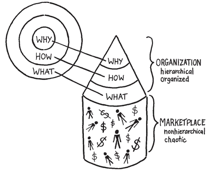

Speak Clearly and Ye Shall Be Clearly Understood
An organization is represented by the cone in the three-dimensional view of The Golden Circle. This organized system sits atop another system: the marketplace. The marketplace is made up of all the customers and potential customers, all the press, the shareholders, all the competition, suppliers and all the money. This system is inherently chaotic and disorganized. The only contact that the organized system has with the disorganized system is at the base—at the WHAT level. Everything an organization says and does communicates the leader’s vision to the outside world. All the products and services that the company sells, all the marketing and advertising, all the contact with the world outside communicate this. If people don’t buy WHAT you do, they buy WHY you do it, and if all the things happening at the WHAT level do not clearly represent WHY the company exists, then the ability to inspire is severely complicated.

When a company is small, this is not an issue because the founder has plenty of direct contact with the outside world. Trusted HOW-types may be in short supply and the founder opts to make a majority of the big decisions. The founder or leader actually goes out and talks to customers, sells the product and hires most if not all the employees. As the company grows, however, systems and processes are added and other people will join. The cause embodied by an individual slowly morphs into a structured organization and the cone starts to take shape. As it grows, the leader’s role changes. He will no longer be the loudest part of the megaphone; he will become the source of the message that is to flow through the megaphone.
When a company is small, it revolves around the personality of the founder. There is no debate that the founder’s personality is the personality of the company. Why then do we think things change just because a company is successful? What’s the difference between Steve Jobs the man and Apple the company? Nothing. What’s the difference between Sir Richard Branson’s personality and Virgin’s personality? Nothing. As a company grows, the CEO’s job is to personify the WHY. To ooze of it. To talk about it. To preach it. To be a symbol of what the company believes. They are the intention and WHAT the company says and does is their voice. Like Martin Luther King and his social movement, the leader’s job is no longer to close all the deals; it is to inspire.
As the organization grows, the leader becomes physically removed, farther and farther away from WHAT the company does, and even farther away from the outside market. I love asking CEOs what their biggest priority is, and, depending on their size or structure, I generally get one of two answers: customers or shareholders. Sadly, there aren’t many CEOs of companies of any reasonable size who have daily contact with customers anymore. And customers and shareholders alike both exist outside the organization in the chaotic world of the marketplace. Just as the cone demonstrates, the CEO’s job, the leader’s responsibility, is not to focus on the outside market—it’s to focus on the layer directly beneath: HOW. The leader must ensure that there are people on the team who believe what they believe and know HOW to build it. The HOW-TYPES are responsible for understanding WHY and must come to work every day to develop the systems and hire the people who are ultimately responsible for bringing the WHY to life. The general employees are responsible for demonstrating the WHY to the outside world in whatever the company says and does. The challenge is that they are able to do it clearly.
Remember the biology of The Golden Circle. The WHY exists in the part of the brain that controls feelings and decision-making but not language. WHATs exist in the part of the brain that controls rational thought and language. Comparing the biology of the brain to the three-dimensional rendering of The Golden Circle reveals a profound insight.

The leader sitting at the top of the organization is the inspiration, the symbol of the reason we do what we do. They represent the emotional limbic brain. WHAT the company says and does represents the rational thought and language of the neocortex. Just as it is hard for people to speak their feelings, like someone trying to explain why they love their spouse, it is equally hard for an organization to explain its WHY. The part of the brain that controls feelings and the part that controls language are not the same. Given that the cone is simply a three-dimensional rendering of The Golden Circle, which is firmly grounded in the biology of human decision-making, the logic follows that organizations of any size will struggle to clearly communicate their WHY. Translated into business terms this means that trying to communicate your differentiating value proposition is really hard.
Put bluntly, the struggle that so many companies have to differentiate or communicate their true value to the outside world is not a business problem, it’s a biology problem. And just like a person struggling to put her emotions into words, we rely on metaphors, imagery and analogies in an attempt to communicate how we feel. Absent the proper language to share our deep emotions, our purpose, cause or belief, we tell stories. We use symbols. We create tangible things for those who believe what we believe to point to and say, “That’s why I’m inspired.” If done properly, that’s what marketing, branding and products and services become; a way for organizations to communicate to the outside world. Communicate clearly and you shall be understood.